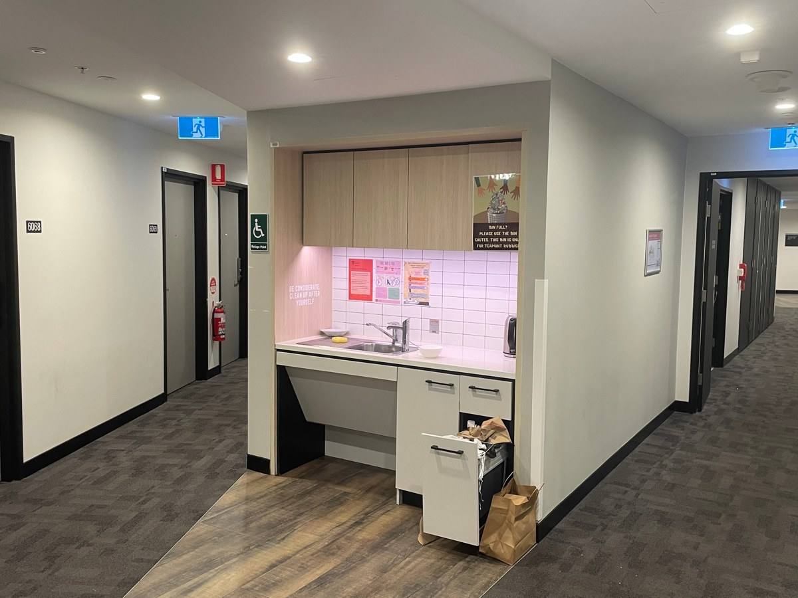

Human-Computer Interaction
Designing and evaluating interactive systems that support cognition, learning, decision making, and user experience.
University of Auckland PhD Student
My name is Lefan Lai (赖乐凡), and I am currently pursuing a PhD at the University of Auckland. Thank you for visiting my personal website.
01 / Human
My HCI work begins with people as learners, searchers, collaborators, and spatial thinkers.
Designing and evaluating interactive systems that support cognition, learning, decision making, and user experience.
Studying how interactive tools can help people practise spatial reasoning and develop skills connected to STEM learning.
Using empirical studies to understand attention, memory, perception, task demands, and human skill development.
02 / AI
I also work on technical AI questions, especially reliable and human-centred methods for LLMs and multimodal systems.
Investigating LLMs and multimodal LLMs as systems that reason with language, vision, uncertainty, and context.
Exploring ways to reduce object hallucination and improve reliability through uncertainty-guided visual refinement.
Studying efficient methods that improve model behaviour without requiring expensive retraining pipelines.
03 / Space
XR and mixed reality let research questions become embodied: objects, depth, memory, motion, attention, and skill can all be studied together.
Exploring how virtual and physical environments shape perception, attention, interaction, and spatial behaviour.
Understanding how people search for virtual information in complex environments and how spatial regularities influence memory.
Designing adaptive interactive tools and games that support spatial reasoning and human skill development.
Showing 3 updates.
PaperAccepted
Our paper Looking Closer When Unsure: VIGOR, A Training-Free Framework for Mitigating Object Hallucination in Multimodal Large Language Models was accepted to Findings of EMNLP 2026.
PaperSubmitted
This marked a new step in my technical AI research and my first time leading an AI paper.
PaperSubmitted
We submitted a revised version of our multimodal AI paper to EMNLP 2026.
Social
I travelled to Barcelona for the CHI conference and presented Searching Through Complex Worlds: Visual Search and Spatial Regularity Memory in Mixed Reality.
PaperSubmitted
We submitted Looking Closer When Unsure: VIGOR, the first AI paper I contributed to, to EMNLP 2026.
PaperAccepted
Searching Through Complex Worlds: Visual Search and Spatial Regularity Memory in Mixed Reality became my first accepted publication.
PaperSubmitted
The submission grew from my master's research on visual search and spatial regularity memory in mixed reality.
Showing 2 papers.

ACM Conference on Human Factors in Computing Systems

Conference on Empirical Methods in Natural Language Processing
I am currently a PhD student at the University of Auckland, New Zealand. My PhD is fully funded through a Smart Ideas project supported by MBIE. I am jointly supervised by Associate Professor Burkhard Wuensche and Professor Mark Billinghurst, with each supervisor contributing equally to my PhD supervision. I am affiliated with both the Graphics Lab and the Empathic Computing Lab.
Before starting my PhD, I completed a Master of Computer Science at the University of Sydney, where I worked in the AID-Lab under the supervision of Dr Brandon Syiem and Dr Zhanna Sarsenbayeva.
I received my Bachelor's degree in Software Engineering from Nanchang University. My research interests include Human-Computer Interaction, Artificial Intelligence, Large Language Models, Extended Reality and Mixed Reality, multimodal AI, spatial skills training, visual search, and human-centred intelligent systems.
The University of Auckland, New Zealand.
The University of Sydney, Australia.
WAM 85.75 High Distinction
Nanchang University, China

I am always happy to discuss any question, explore unfamiliar territory, and follow ideas wherever curiosity leads.
A research space
What is a person when intelligence begins to speak back? What is AI when it enters perception, space, and learning? My work studies the moments where people, intelligent systems, and spatial experience begin to shape one another.
Memory, attention, skill, uncertainty, movement, and lived experience.
Language, vision, reliability, adaptation, hallucination, and collaboration.
The researcher
I am currently a PhD student at the University of Auckland, New Zealand. My PhD is a fully funded PhD scholarship supported by a Smart Ideas project supported by MBIE.
I am jointly supervised by Associate Professor Burkhard Wuensche and Professor Mark Billinghurst, and I am affiliated with both the Graphics Lab and the Empathic Computing Lab.
Before starting my PhD, I completed a Master of Computer Science at the University of Sydney, where I worked in the AID-Lab under the supervision of Dr Brandon Syiem and Dr Zhanna Sarsenbayeva.
The University of Auckland, New Zealand
The University of Sydney, Australia
Nanchang University, China
Thinking map
I work across pure technical questions in AI and LLMs, and human-centred questions in HCI, XR, mixed reality, and spatial skills. Move the lens to inspect the research language.
Selected paper
A publication becomes a trace of a larger question: how people search, remember, and act when virtual information is placed inside physical space.
Lefan Lai, Tinghui Li, Zhanna Sarsenbayeva, Brandon Victor Syiem.
ACM CHI Conference on Human Factors in Computing Systems, CHI 2026.
View ACM DOIOpen conversation
I would be very happy to discuss extended reality, AI, HCI, LLMs, spatial learning, research collaborations, project ideas, and thoughtful academic conversations.
Lefan Lai's research book
Research Book / Chapter 00
A PhD research book about people, AI, and spatial experience.
This book follows one research question through four chapters: the researcher, the path, the thinking map, and the work that turns ideas into studies.
Chapter 01
I am currently a PhD student at the University of Auckland, New Zealand. My PhD is a fully funded PhD scholarship supported by a Smart Ideas project supported by MBIE. I am jointly supervised by Associate Professor Burkhard Wuensche and Professor Mark Billinghurst, with each supervisor contributing equally to my PhD supervision. I am affiliated with both the Graphics Lab and the Empathic Computing Lab.
Before starting my PhD, I completed a Master of Computer Science at the University of Sydney, where I worked in the AID-Lab under the supervision of Dr Brandon Syiem and Dr Zhanna Sarsenbayeva. I received my Bachelor's degree in Software Engineering from Nanchang University.
My work spans pure technical research in AI, LLMs, and multimodal model reliability, as well as human-centred research in HCI, XR, mixed reality, spatial learning, and interactive systems.
The University of Auckland, New Zealand
The University of Sydney, Australia
Nanchang University, China
Chapter 02
Chapter 03
Current work explores how people search, remember, and interact with virtual information in complex mixed reality worlds.
Lefan Lai, Tinghui Li, Zhanna Sarsenbayeva, Brandon Victor Syiem.
ACM CHI Conference on Human Factors in Computing Systems, CHI 2026.
View ACM DOIChapter 04
I would be very happy to discuss extended reality, AI, HCI, LLMs, spatial learning, and possible research collaborations.